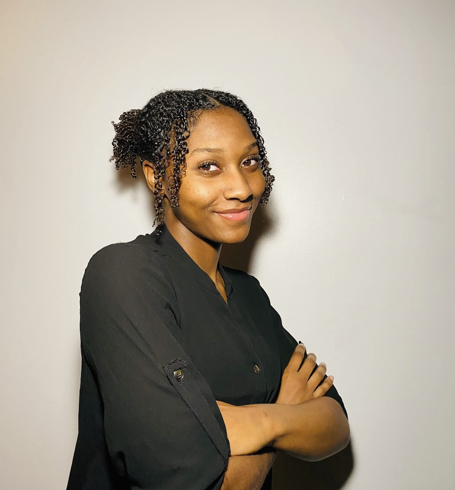
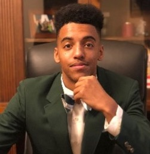

Kyra Milton
Welcome to our web page! I’m Kyra Milton, a senior and a 2nd year transfer Information Technology scholar from Atlanta, Georgia. My role in this group is to serve as our Technical Writer, Creative Director, Analytic Support, and IT Architect. In this group I will bring my diligence and skills in Web development, Project Management and Java script to help serve any client our group assists.
Nathan Price

Greetings, I am Nathan Price and I am a 4th year Information Technology scholar from Miami Gardens, Fl. I serve as the Co-lead and Database Administrator. I possess skills in Python, C++, Database Administration, User Support, and Data Analysis.
Javonte Carter

Hello, my name is Javonte Carter. I am a Senior Information Technology scholar. I serve as the librarian, operator, editor, and proofreader. I possess skills in Reliability, Web Development, Computer Programming (C++, C#, MySQL, HTML, and Kotlin), Financial Management, Bookkeeping, UX design, and data security.
Marion Jones
My name is Marion Jones III, and I am a senior acheiving a Information Technology degree at Florida A&M University. My role is back-up support, Computer Systems Manager and Leader of the Digital Dream Team. My skills are website designer, Coder (C+, C#, Java, HTML), graphic design skills.